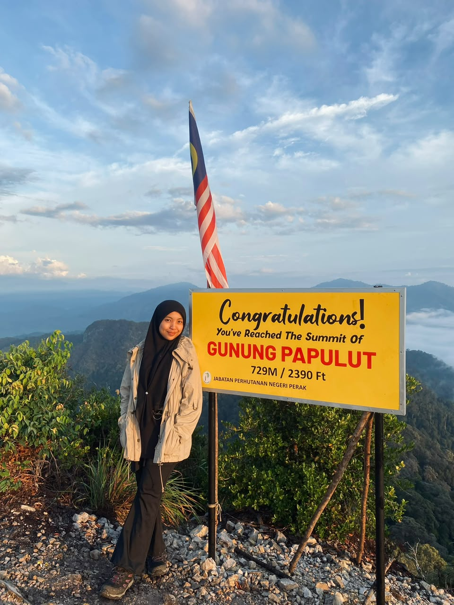

halaman empat · sasarkan impian hang
Jom Memanah! 🏹
Permainan memanah maya saja tau, bukan latihan memanah sebenar hiighihihi. Tarik nafas, set sasaran, dan lepaskan anak panah.
Cabaran 5 Anak Panah
Setiap cubaan dapat mata secara random. Cuba kumpul markah tertinggi!
Anak panah
5
Jumlah mata
0
Tembakan terbaik
-
🏹
Hang dah sedia? Tekan butang untuk lepaskan anak panah pertama. ♡
gambar terbaik
Pemenang gambaq hang pada umur 24 🌷
Secantik diri hang, secantik itu juga peribadi hang, kekalkan kecantikan itu bak bunga mawar mekar yang jarumnya tajam tapi indah dilihat dan dihidu baunyaa.
